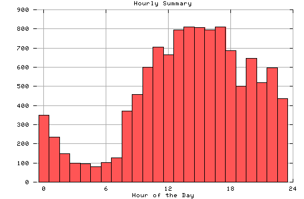

HTTP Server Hourly Summary
Covers: 09/27/95 to 03/11/96 (167 days).
All dates are in local time.
midnite: 349 : ################# 1:00 am: 234 : ############ 2:00 am: 147 : ####### 3:00 am: 100 : ##### 4:00 am: 96 : ##### 5:00 am: 79 : #### 6:00 am: 101 : ##### 7:00 am: 128 : ###### 8:00 am: 370 : ################### 9:00 am: 458 : ####################### 10:00 am: 600 : ############################## 11:00 am: 705 : ################################### noon: 666 : ################################# 1:00 pm: 794 : ######################################## 2:00 pm: 809 : ######################################## 3:00 pm: 807 : ######################################## 4:00 pm: 795 : ######################################## 5:00 pm: 810 : ######################################### 6:00 pm: 687 : ################################## 7:00 pm: 500 : ######################### 8:00 pm: 645 : ################################ 9:00 pm: 520 : ########################## 10:00 pm: 597 : ############################## 11:00 pm: 435 : ######################

Statistics generated at Mon Mar 11 03:12:24 MET 1996, (C) Schibsted Nett AS, 1995.